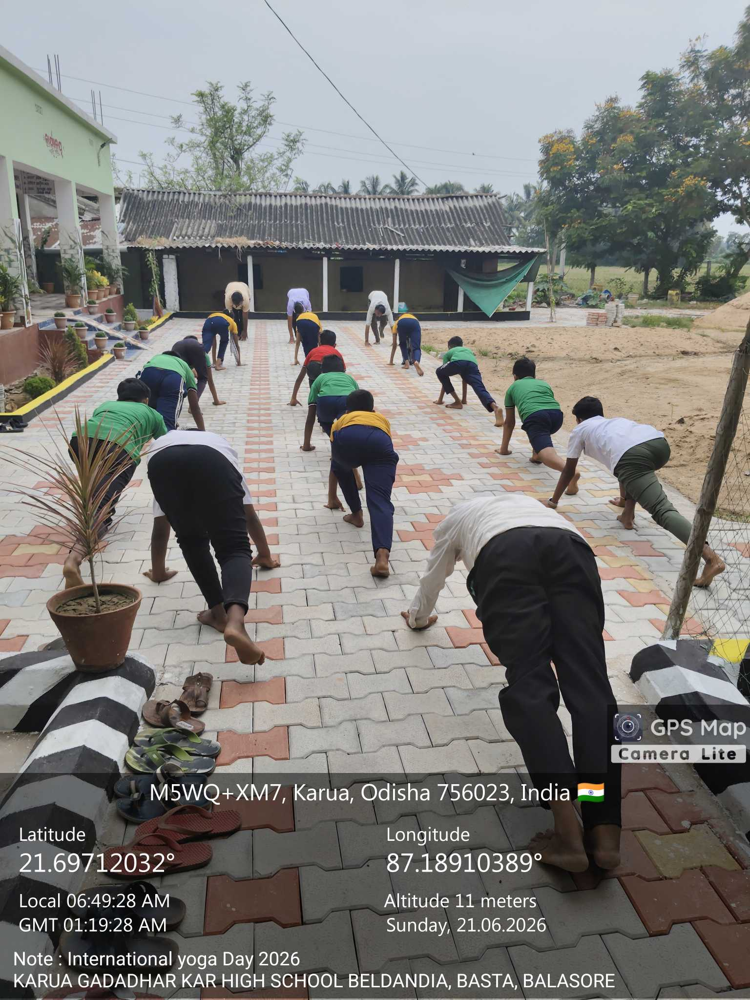
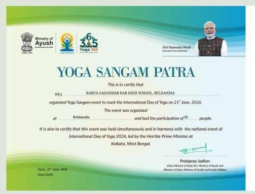

🌬️
1. Deep Breathing
ଗଭୀର ଶ୍ୱାସ ଅଭ୍ୟାସ
- Sit comfortably.
- Keep your back straight.
- Breathe in slowly through the nose.
- Breathe out gently.
- Repeat without force.
ସୁବିଧାରେ ବସି ନାକ ଦ୍ୱାରା ଧୀରେ ଶ୍ୱାସ ନିଅନ୍ତୁ ଓ ଧୀରେ ଶ୍ୱାସ ଛାଡ଼ନ୍ତୁ।
ଯୋଗ ଓ ସୁସ୍ଥତା

Yoga is a practice that combines body movements, breathing, concentration and relaxation.
ଯୋଗ ହେଉଛି ଶରୀରର ଚଳନ, ଶ୍ୱାସ ଅଭ୍ୟାସ, ଏକାଗ୍ରତା ଓ ବିଶ୍ରାମର ଏକ ସୁନ୍ଦର ଅଭ୍ୟାସ।
Regular yoga practice may help improve flexibility, balance, concentration and relaxation.
ନିୟମିତ ଯୋଗ ଅଭ୍ୟାସ ଶରୀରର ନମନୀୟତା, ସନ୍ତୁଳନ, ଏକାଗ୍ରତା ଓ ମନର ଶାନ୍ତି ବଢ଼ାଇବାରେ ସାହାଯ୍ୟ କରିପାରେ।
ସୁବିଧାରେ ବସି ନାକ ଦ୍ୱାରା ଧୀରେ ଶ୍ୱାସ ନିଅନ୍ତୁ ଓ ଧୀରେ ଶ୍ୱାସ ଛାଡ଼ନ୍ତୁ।
ସିଧା ଛିଡ଼ା ହୋଇ ଦୁଇ ହାତ ଉପରକୁ ଉଠାଇ ଶରୀରକୁ ଉପର ଦିଗକୁ ଟାଣନ୍ତୁ।
ଗୋଟିଏ ଗୋଡ଼ରେ ସନ୍ତୁଳନ ରଖି ଅନ୍ୟ ଗୋଡ଼କୁ ସାବଧାନରେ ରଖନ୍ତୁ। ଦୁଇ ପାର୍ଶ୍ୱରେ ଅଭ୍ୟାସ କରନ୍ତୁ।
ଭୂମିରେ ସୁବିଧାରେ ବସି ପିଠି ସିଧା ରଖନ୍ତୁ। ହାତକୁ ଆଣ୍ଠୁ ଉପରେ ରଖି ଶ୍ୱାସ ଉପରେ ଧ୍ୟାନ ଦିଅନ୍ତୁ।
ସଫା ମାଟ୍ ଉପରେ ଆଣ୍ଠୁ ମାଡ଼ି ସୁବିଧାରେ ବସନ୍ତୁ। ପିଠି ସିଧା ରଖି ଶାନ୍ତ ଭାବରେ ଶ୍ୱାସ ନିଅନ୍ତୁ।
ପେଟ ତଳକୁ କରି ଶୋଇ ହାତକୁ କାନ୍ଧ ପାଖରେ ରଖନ୍ତୁ। ଛାତିକୁ ଧୀରେ ଉଠାଇ ପୁଣି ତଳକୁ ଆସନ୍ତୁ।
ପିଠି ଉପରେ ଶୋଇ ହାତ, ଗୋଡ଼ ଓ ସମଗ୍ର ଶରୀରକୁ ଶିଥିଳ କରନ୍ତୁ।
ସୁବିଧାରେ ବସି ଆଖି ବନ୍ଦ କରନ୍ତୁ। ସ୍ୱାଭାବିକ ଶ୍ୱାସ ଉପରେ ଧ୍ୟାନ ଦେଇ କିଛି ସମୟ ଶାନ୍ତ ଭାବରେ ରୁହନ୍ତୁ।
Our students participated in Yoga activities on the occasion of International Day of Yoga 2026 at Karua Gadadhar Kar High School, Beldandia.

Yoga practice by our school students.

Certificate of participation in the Yoga Sangam event organised on 21 June 2026.
| Activity | Time |
|---|---|
| Quiet sitting / ଶାନ୍ତ ଭାବରେ ବସିବା | 2 minutes |
| Deep breathing / ଗଭୀର ଶ୍ୱାସ | 3 minutes |
| Tadasana / ତାଡ଼ାସନ | 2 minutes |
| Simple yoga poses / ସରଳ ଯୋଗାସନ | 5 minutes |
| Meditation / ଧ୍ୟାନ | 3 minutes |
| Shavasana / ଶବାସନ | 2 minutes |
ଶିକ୍ଷକ କିମ୍ବା ବଡ଼ମାନଙ୍କ ନିରୀକ୍ଷଣରେ ଯୋଗ ଅଭ୍ୟାସ କରନ୍ତୁ। ଶରୀରକୁ ଜୋର କରନ୍ତୁ ନାହିଁ। ଅସୁବିଧା ହେଲେ ତୁରନ୍ତ ବନ୍ଦ କରନ୍ତୁ।
Practise any three simple yoga activities and write the date, activity name and practice time in your notebook.
ଯେକୌଣସି ତିନୋଟି ସରଳ ଯୋଗ ଅଭ୍ୟାସ କରି ତାରିଖ, ଅଭ୍ୟାସର ନାମ ଓ ସମୟ ଖାତାରେ ଲେଖନ୍ତୁ।